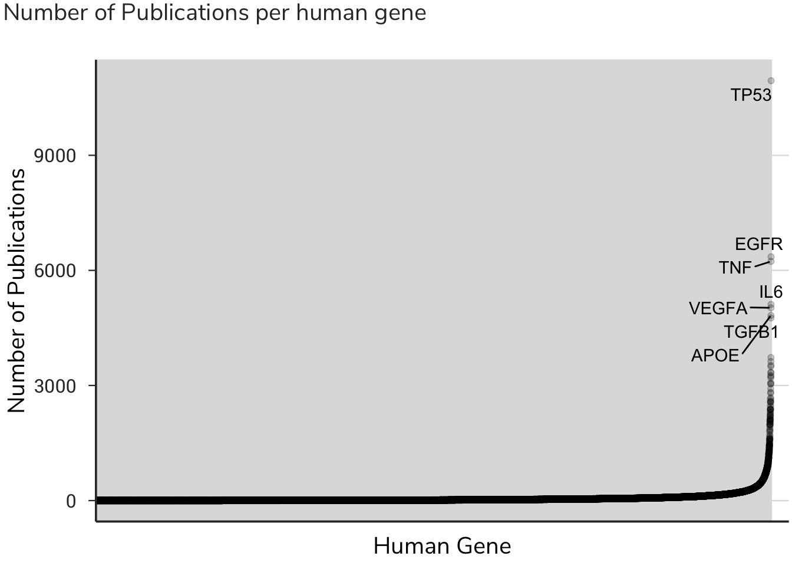
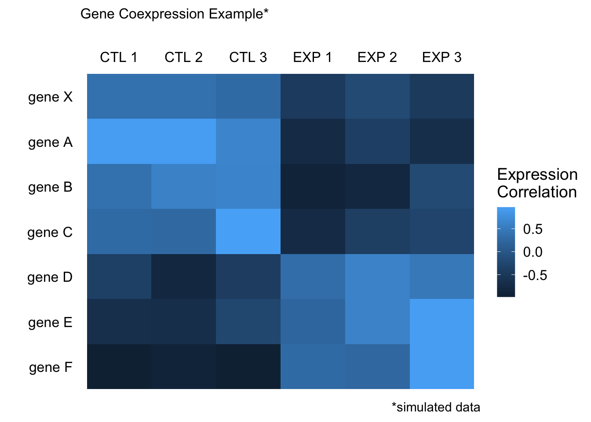

Introduction
Mapping Gene Function
Identifying the key functions of human genes is a major biomedical research goal. While some genes are very well-studied, most human genes we know little about. Mapping a broad set of gene functions en masse is currently not possible, and therefore most scientific research proceeds with a one-gene-at-a-time approach. While this reductionist approach has guided the scientific methods for hundreds of years, the volume, complexity, and sophistication of modern science necessitate alternative approaches.
New tools in Data Science – a combination of computer programming, math & statistics, and topical expertise – combined with the rapid adoption of open science and data sharing allow scientists to access publicly available datasets and interrogate these data before performing any experiments.
Such tools allow researchers to identify new hypotheses for well-studied genes, or new processes for un-annotated genes. Indeed, most human genes are poorly studied, perhaps because of the intractability to study them with no prior knowledge.
This project aims to address this challenge. Welcome to data-driven hypothesis.
What is data-driven hypothesis?
The overall goal of the data-driven hypothesis (DDH) project is to use new tools in Data Science to generate hypotheses supported by data that can be tested in the lab. Several high-quality, publicly available datasets are published online and made available with Creative Commons Attribution 4.0 International (CC BY 4.0) licenses. The advent and rapid adoption of data-sharing platforms, such as figshare.com have provided high-quality data sets for public interrogation.
This project began as an extension of a simple and common concept called pattern recognition – looking for patterns in large datasets that might reveal similarities between common genes. As one simple example, common gene expression patterns can be revealed using gene co-expression analysis. When a gene of unknown function is identified, one strategy to learn something about the new gene is to identify shared patterns of expression with other genes. If unknown Gene X is expressed with known genes A, B, and C, then you can infer that Gene X might be part of a functional module with A, B, C. This approach is particularly powerful when genes A, B, and C are part of a known biological pathway, which leads to the hypothesis that Gene X might also be part of that same pathway.

Beyond this simple exmaple, we aim to leverage several different types of data glean information about known and unknown genes. We present here a comprehensive resource for mapping the structure or function of thousands of genes across the human genome. Importantly, this method integrates several data types, including gene essentiality, gene expression, and literature mining to identify candidate functions of known or unknown genes. The DDH project holds tremendous promise to generate hypotheses, data, and knowledge in order to provide a deep understanding of the dynamic properties of an organism. We provide this resource via an intuitive online interface, which will provide the scientific community a platform to query and prioritize experimental hypotheses to test in the lab.